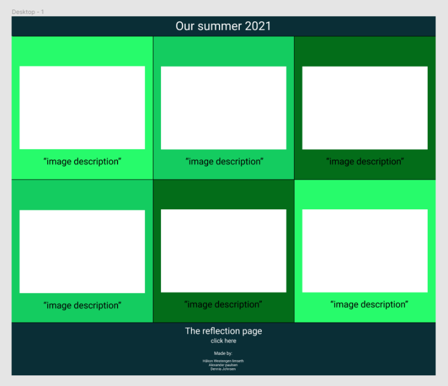
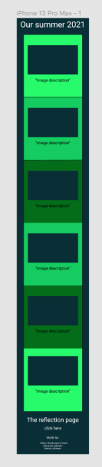

We started off this project by making the wireframe in Figma. We just found some simple videos on youtube on how to make a wireframe. The wireframe part went pretty easy, but when we were gonna implement the it problems kept appearing. We were also wondering wich way we wanted to display each frame with text and picture, but ended up with flexbox. When creating the flexbox we struggled many hours on how to make the frames go below each other when we opened the site on a phone. Then we struggled on how to make the pictures resize relative to the screensize. We didnt find out about it before we had made the whole site. One evening one of us opened it on a smaller computerscreen(19 inch) and it had a horizontal scrollbar and it had white spaces on the right side. This was because the computers we used to make the site were much bigger than a regular sized one.
We knew that we could use @media and set a max and min width. We could then give the pictures a width that would keep the screen clean with no horizontal scrollbars. The problem was when shrinking the pictures from the computerscreen size to mobile screensize. It would make the right pictures dissappear until the media query kicked in at about 768px. Since the usual computerscreen is about 1300-1400px wide we made a media query that made the picture width smaller so it would fit the screen much better if it was around 1300px and when it went lower than 1280px. We also made one media query as said for mobile. When it went below 768px in width the flexbox direction was switched to column and the picture width was lowered to fit the screen. We used the picture semantic tag, but we didnt use any set picturesizes.
 {kind=link}
{kind=link}